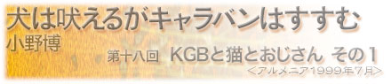

|  |
|
バスでグルジアからアルメニア国境に着いた。が、そこから先の街に行くいかなる公共交通機関もなかった。国境で２時間くらい色々な人に聞いてわかったのは、とにかくそういう事だった。 こんな小さなキオスク以外何にもない場所で、近くの街に行く方法もなく、両替も出来ず、アルメニアのお金ももっていない状態なのに、太陽はだんだん沈んでくる。私は焦って、国境を通る車すべてにヒッチハイクをこころみたが、誰も乗せてくれなかった。やっと夕方、トルコ人が運転するトラックがつかまり、近くの街まで連れて行ってもらうことになった。 「ほら、街だ」。安堵からうつらうつらしていた私を運転手が起こしてくれた時、あたりはすっかり夜になっていた。私は寝ぼけたまま外を眺めた。 そこはほんとうに変な街だった。ほとんどの建物は高い山を水平に切り取った平地に立っていて、麓からはロープウェイが延びている。私は、まず乗り場に行ってみたが、ロープウェイは動いてなかった。どうやって上に行くのだろうと思っていると、山羊を連れたおじいちゃんが山を登っているのが見えた。私は、彼について獣道のような道を重い荷物を持って登った。 街の唯一のホテルらしい建物に入る。部屋は、水道も電気も使えないので、ランプの下までバケツで水を汲んできて、顔と体を洗った。ベットに寝ころんだ瞬間、私は眠りについた。 次の朝、早速ロープウェイで麓に降り、そこから街を見上げて驚いた。その地形は、自然に隆起してできたもので、街は自然の要塞になっているのだ。巨大な廃墟が麓に横たわっている。大きな何かの工場らしいが、建造物の表面は見事に錆びており、遠くから見ると巨大な錆の固まりだ。朝の通勤時間にもかかわらず物音一つしない。この街の産業の中心は死んでいて、閉鎖後の炭坑街のような侘びしさが流れている。 幹線道路沿いの小さな野菜市場に立ち寄る。トマトを食べながら歩いていると、５０代くらいのおじさんが話しかけてきた。 「日本人？」ときかれたので「はいそうです」というと、彼はリンゴを一つくれた。 長く移動していると、危険人物がもつ独特のオーラを感じるようになる。それは、きっと安全な移動を続けるのに必要な技術なのだろう。彼はどうやら危害を加える人ではなさそうだ。近づいてきたのは私が異国人だからではなく、気の合いそうな人と話をしたいからというかんじで、彼のオーラは自然で澄み切っていた。 といっても、ロシア語ではほとんど会話らしい会話は出来ない。花を見て「綺麗ですね」とか、「リンゴ美味しいです」とか、そんなことばかり話していると、彼が「家に寄っていけ」と言った。 １０分くらい山道をあるき、線路脇にあるコンテナの家についた。彼が帰ってくると猫が３匹寄ってきた。コンテナにはマットレスが一つ、コンテナの前には机が置いてあり、その周りには菜園がある。彼は買ってきたパンを少しづつ猫に与え、電源の入ってない冷蔵庫からチーズを取り出してきた。それは、凝縮された濃い味で本当に美味しかった。 やがて彼は畑仕事を始めた。特に会話も無かったのだが、実家でよく畑仕事を手伝っていた私には、彼のやりたいことがわかった。トマトのツルに添え木をしたりしたり、川から水を汲んだりして、日が傾き始めるまで一緒に作業した。 そのうち、バスケットをもった若いアルメニア人女性がやってきた。私がいることにびっくりしていたが、おじさんが私を紹介すると、ニコニコしながら食事の準備をしてくれた。汚いテーブルにテーブルクロスを敷き、皿に野菜と肉を焼いた主菜を並べ、小さな鍋からスープを注ぎ、パンを切った。 私たちは２人前の食事を分けて食べた。女性とおじさんは、思い出したようにテーブルの下で「ニャーニャー」と餌をほしがる猫に肉やパンを少しあげる。会話はないけれど、気まずくない。むしろ楽しい食事だった。一人で長いこと移動していると、必要なカロリーをただ摂取するだけの食事になりがちだ。お腹がすいても、「あー、また何か食べなくちゃ。面倒だな」と思い、苦痛になる。でも、野外の小さなテーブルでわずかな食べ物を囲んでいると、とても満ち足りた気分になっていく。そして、それはとても美味しかった。 ホテルに戻るロープウェイの時間が迫っているので、礼を言って帰ろうとしたとき、二人が「明日……」と私に言った。きっと明日もくるのか？ と聞いているんだと思い「はい」と言って手を振った。おじさんと女性も手を振り、３匹の猫も「ニャーニャー」と言って見送ってくれた。 旧ソ連の国々にやってくると、社会主義国家がいかに深刻な機能不全に陥り、崩壊していったかが、風景に刻印されている。機能していないのにそこにある、という状態は何もないよりやっかいだ。工場の建物・システムがある箇所では崩壊し、ある箇所では錆付いているのに、ある箇所では部分的に機能している。その喪失感は、中心を失った旧ソ連の国々を象徴しているようだ。 それでも、普通の人々はおびえながらも、なんとか一日一日を乗り切っていったように思う。おじさんが以前どんな仕事していて、どういう経緯でコンテナに住むことになったか分からない。だが、畑を耕し、周りのささやかなサポートを受けながら、今はどうにか自然な笑いを獲得することができたのだろう。 ホテルに戻った私は、電気が無いことを忘れて動かないエレベーターに乗った。それを見たおばさん達が苦笑いしている。私も苦笑いしながら、明日もあのおじさんのところに絶対行こうと思った。 |
| 小野博（おの・ひろし） 1971年岡山生まれ。写真家・映像作家。多摩美術大学彫刻科卒業。1992年から世界を移動しながら作品制作をしている。1999年コニカ写真奨励賞を受賞して50カ国を巡り「地球の線」を制作。2001年コニカプラザ、反-記憶展・横浜美術館、Twilight Sleep展・Instituto Giapponese di Cultura, Roma（Italy）で発表する。現在アムステルダム在住。VOCA賞奨励賞受賞。 |